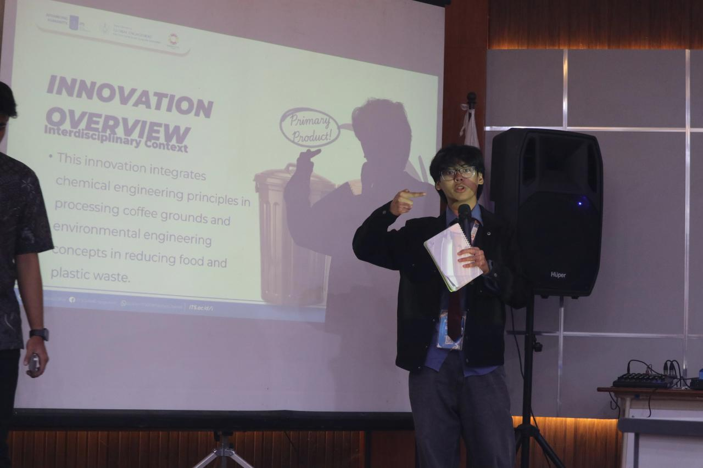
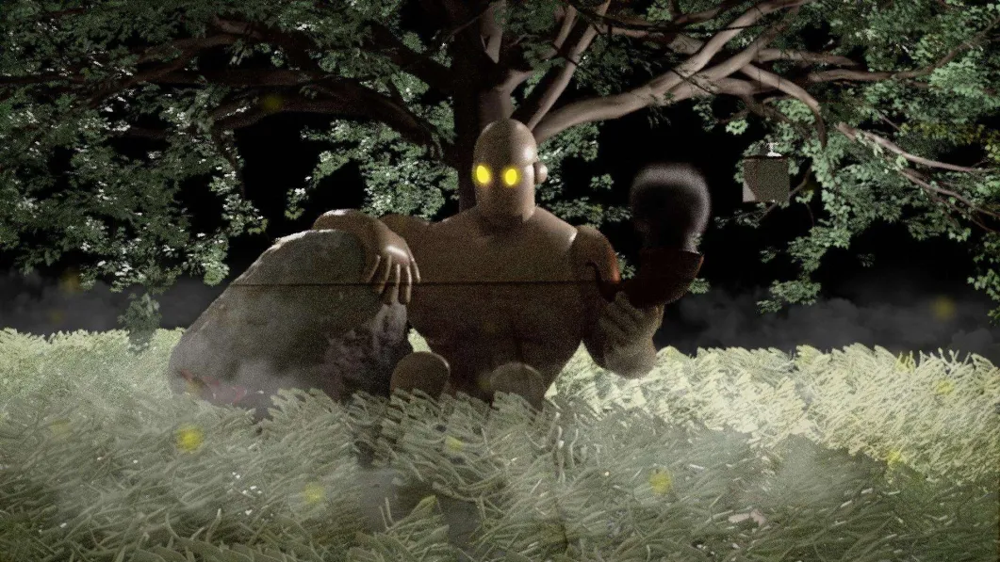
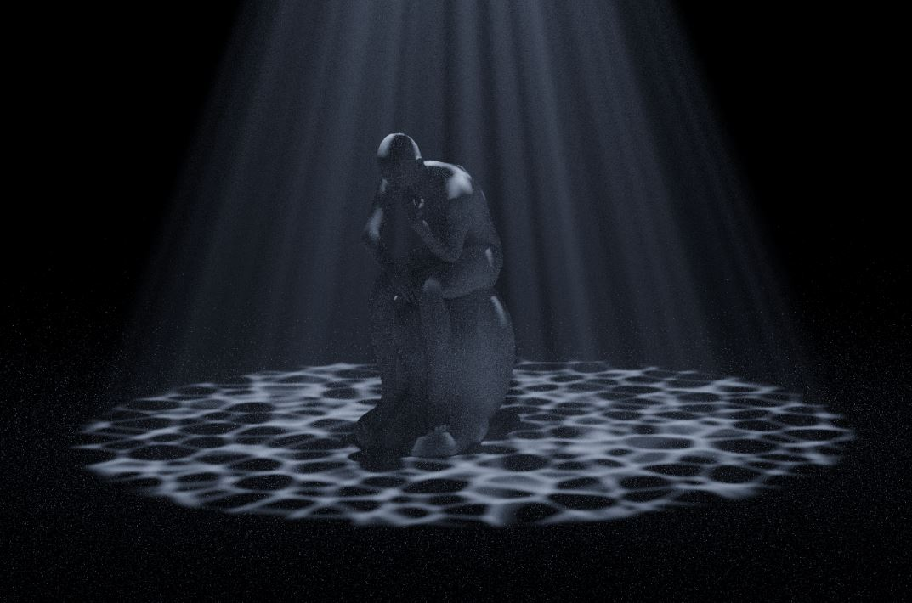
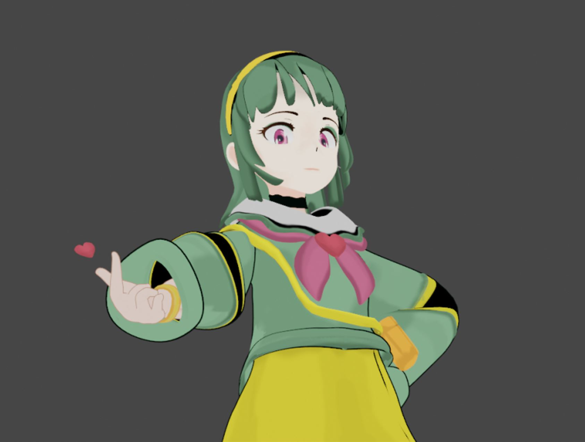
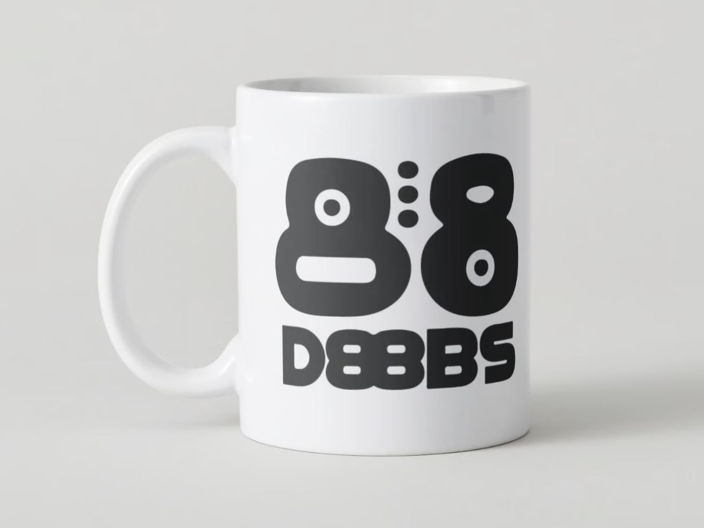

MobiCane
Smart assistive navigation prototype for visually impaired users. Grand Finalist at Bach Khoa Innovation 2026 in Vietnam.

I create across engineering, design, and social impact — from embedded systems and physical prototypes to visual experiences, youth initiatives, and international collaboration.
 Bach Khoa Innovation 2026 · Vietnam
Bach Khoa Innovation 2026 · Vietnam RAYS · Malaysia
RAYS · Malaysia CommTECH · Indonesia
CommTECH · IndonesiaThe original portfolio began with visual work. It now expands into engineering, robotics, fabrication, leadership, and international collaboration — while keeping the creative foundation that started it.
Smart assistive navigation prototype for visually impaired users. Grand Finalist at Bach Khoa Innovation 2026 in Vietnam.

One of the most meaningful parts of my story — serving as Vice President in youth-led child-rights advocacy and community action.

Full-scholarship international delegate representing National University Clark in Surabaya, Indonesia.

A student-led initiative in community cleanups and tree planting — a project I want to keep building from.

Region III Champion and National 3rd Runner-Up through ICpEP Philippines.

ASEAN Access Fund delegate and Planet Futures Forum participant in Kuching, Malaysia.

Student-led merchandise campaign developed with the BullBytes creatives and officers.

Creative work and organization initiatives recognized during the 2025–2026 school year.
I still want the visual side of my work to be immediately visible. This gallery keeps the original portfolio idea, but now shows more pieces at once and preserves the full image whenever possible so the homepage feels fuller and more expressive.


.png)










Older experiments, commissions, animation, publication work, and 3D studies remain part of the story.
Browse the full creative archiveA restored version of the video carousel from my original portfolio — now rebuilt so it stays inside the page flow and remains responsive.
3D animation · Motion · Visual storytelling
Modeling · Animation · Editing
Animation · Multimedia · Experimental work
These videos are part of the creative foundation of my portfolio.
View animation archiveCommunity work and international experiences are not side notes here. They shape how I approach engineering: collaboratively, socially, and with real people in mind.
International delegate focused on sustainability and youth leadership, sponsored through the ASEAN Access Fund.
Selected on a full scholarship to represent NU Clark in an international technology program in Surabaya.
Vice President supporting child-rights advocacy, youth participation, and community initiatives — including one of my favorite milestones with the team in our capes.

Vice President for External Affairs; organization recognized for Excellence in Creativity & Innovation.